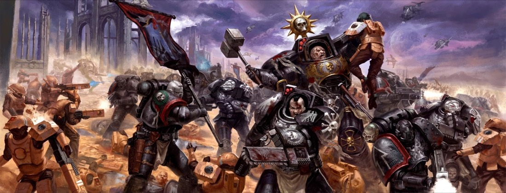

Raven Guard
| Raven Guard XIX Legion · the Emperor's hidden hand | |
|---|---|
Badge of the Raven Guard Artwork © Games Workshop | |
| Founding | First Founding, c. 700.M30[a], in the late Unification Wars |
| Legion number | XIX |
| Primarch | Corvus Corax (the Raven Lord, the Deliverer; found 922.M30, vanished c. 022.M31) |
| Chapter leader | Master of Shadows Aethon Shaan |
| Homeworld | Deliverance, moon of the forge world Kiavahr |
| Fortress | Ravenspire |
| Allegiance | Loyalist, Imperium of Mankind |
| Colours | Black and white |
| Motto | Victorus aut Mortis ("Victory or Death") |
| Organisation | Ten companies, each led by a Shadow Captain; kept chronically under strength |
| Successor Chapters | Ashen Claws, Black Guard, Death Spectres, Iron Ravens, Knights of the Raven, Necropolis Hawks, Raptors, Raven's Watch, Revilers, Rift Stalkers, Shadow Haunters, Storm Wings and others of suspected descent |
| Notable battles | |
| Gate Forty-Two; the Scalland Campaign; Drop Site Massacre of Isstvan V; the Prefectia Campaign | |
| Notable members | |
| Corvus Corax, Branne, Kayvaan Shrike, Aethon Shaan, Corvin Severax | |
The Raven Guard, the XIXth Legion of the first Space Marines, are a loyalist Space Marine Chapter and one of the original Space Marine Legions. They are the Imperium's foremost practitioners of stealth warfare. Their battle-brothers infiltrate behind enemy lines, observe, sabotage and assassinate, and then strike hard at a point the enemy believes safe. Their name comes from the black bird that many Terran peoples regarded as a messenger of fate. Their Primarch, Corvus Corax, learned the art of shadow war as a slave in the mines of a moon, and he taught it to the Legion that had been waiting for him.[1]
The Legion was nearly destroyed in the Drop Site Massacre of Isstvan V, where it lost most of its strength. It was rebuilt by means that cost the Legion and its primarch dearly, and its gene-seed has been unstable ever since. Corax left Deliverance a year after the Heresy ended and was never seen again. The Chapter is small, short of recruits and chronically below strength, and the Raven Guard fight like a force of ghosts to compensate.[2]
History
[edit]The hidden hand
[edit]The XIXth Legion was raised at the end of the Unification Wars from the techno-savages of old Terra, in particular the Xeric tribes of the central Asian wastes, who had been used to oppression and occupation. It was given the role of an assassin's weapon. Scholars of the Officio Militaris have called it the Emperor's hidden hand. In the conquest of Central Asia under the tyrant Kalagann of Ursh the Legion's battle groups slipped into the region, identified the enemy's leaders and weak points, and struck when ordered. Most of the enemy surrendered when they found that they were already surrounded. The Legion's earliest feats, such as the capture of the fortress of Hell's Anvil on Baratrum, were carried out mostly in the service of Horus and his Luna Wolves, who treated it as a specialist detachment and rarely credited it.[2]
For almost two centuries the Legion had no primarch. It fought the Great Crusade as an unnamed arm of other commanders' campaigns, and some of its practices, such as the oppression of conquered populations, were harsh.[2]
The Raven Lord
[edit]
Corax's capsule was found in a lightless chamber beneath a glacier on Lycaeus, the airless moon of Kiavahr, which was a forge world of the technical guilds. Lycaeus was a prison mine staffed by slaves, who included criminals, dissidents and workers who had failed to meet their quotas. A party of miners found the infant, and the primarch was raised in secret by the slaves, who named him the Deliverer. His protectors counselled patience. He learned to wait and to watch, and found that he could will watchers not to see him, an ability that he later passed in diminished form to the Legion's elite. In time he led the slaves to overthrow the guilds of Kiavahr, and the moon, which he named Deliverance, became the Legion's homeworld.[2]
In c. 922.M30 Corax took command of the XIXth Legion. He purged much of its cruelty, drew his senior officers from Deliverance, and taught the Legion his three Paths of Shadow, ambush, stealth and vigilance, represented in the Legion's iconography as a trident or a triple-bladed lightning claw. Mastery of one made victory possible, he said, mastery of two made it likely, and mastery of all three made the enemy's defeat certain.[2]
The Great Crusade
[edit]In 994.M30 the Legion carried out the Compliance of the Isstvan System in the northern Ultima Segmentum, bringing the industrial society of Isstvan III into the Imperium, and fought the Scalland Campaign against the remnants of the Aeldari, in which the first thousand sets of what became the Mark VI Corvus armour were tested. After Horus was named Warmaster at Ullanor in 000.M31, the Legion was ordered to take its place in a conventional battle line at the siege of Gate Forty-Two in the Aukum-Sothos Cluster in about 001.M31.[a] It suffered great losses there, a sign of what the open battle would cost it later.[2]
The Legion's fleet used a reflex shield developed on Kiavahr, a variant of the void shield that bent light and sensor signal around the ship's hull and let its ships pass unseen. Its flagship was the battleship Shadow of the Emperor. It fielded a stealth elite, the Mor Deythan, who were said to have inherited a trace of Corax's own talent, and by their art could turn the minds of the living away from them.[2]
Horus Heresy
[edit]
When Horus's treachery was revealed at Isstvan III in 005.M31, most of the Legion was committed in the Thetos-Groton binary system and could only be reached by astropathic message after a long delay. Corax took the Legion to Isstvan V with the intention of leaving a part to garrison Deliverance. At Isstvan V, in 006.M31, it fought on the right of the first wave. When the second wave turned on the Loyalists and the Iron Warriors bombarded the Urgall Depression, the Raven Guard were broken. The flagship was destroyed in orbit by the Death Guard battleship Terminus Est. Corax fought in the killing frenzy that is recorded in the histories, and nearly killed his brother Lorgar in single combat; he marked Lorgar's face with his claws. He and the survivors escaped in the retreat the Legion has since called the Raven's Flight. More than seventy-five thousand Legionaries were lost, and fewer than four thousand remained with the primarch.[3]
Consumed with the desire for revenge, Corax took the survivors to Terra in about 006–007.M31.[a] There, over the objections of Rogal Dorn and Malcador the Sigillite, he spoke to the Emperor, who told him the truth about the Warp, Chaos and the Heresy, and revealed that the Emperor's original gene-stock for the primarchs was not destroyed. Corax entered the hidden laboratories beneath the Imperial Palace with a few of his warriors and a party of Custodians, and removed a quantity of undifferentiated primarch gene-stock. This was used to make a new generation of Legionaries, the Raptors, under Captain Branne, but the process was hurried, and its results included many mutants.[3]
The latest Imperial chronicles of the siege do not place the Raven Guard on Terra when the Traitors attacked. They record that the Legion was committed elsewhere, in the relief of the Space Wolves at Yarant in 012.M31 and the Legion's own shadow war, and that Corax did not stand on the walls. This supersedes older accounts that listed the Legion among those at the Throneworld.[3]
After the Heresy
[edit]Corax welcomed the division of the Legions into Chapters, since he knew that it was necessary. After the Heresy he personally gave the Emperor's Peace to every surviving mutant of the accelerated programme, then shut himself in his chambers in the Ravenspire. After a year, in about 022.M31,[a] he left, boarded a transport bound for the Eye of Terror, and said, "Nevermore." His fate is not known. A few centuries later the gene-seed began to fail, and several of the organs that make a Space Marine ceased to function properly. The Chapter now draws much of its gene-seed from stocks held on Terra, and it has a shortage of recruits.[2]
The Chapter era
[edit]The Raven Guard continued to serve with a smaller strength. Their battle-brothers served with the Deathwatch and in campaigns against the T'au Empire on the Eastern Fringe, where Chapter Master Corvin Severax was killed in the Prefectia Campaign. Command passed to the Shadow Captain Kayvaan Shrike. Shrike broke the Chapter into small groups across the Segmentum Tempestus and the Segmentum Pacificus for covert operations whose goal he did not explain, and the title of Master of Shadows has since passed to Aethon Shaan, who commanded the 1st and 4th Companies and has served in the 10th, 8th, 4th and 1st over several hundred years.[4] Primaris Space Marines were absorbed in the Era Indomitus. The Raven Guard's Successor Chapters, including the Death Spectres, Revilers and Knights of the Raven, fight on their own across the galaxy.
Organisation
[edit]The Legion was divided into chapters, battalions, companies and squads on the pattern laid down by the Officio Militaris, but its warriors regarded the company as their home. Its officers were encouraged to devolve command to the lowest level that could act. The Legion also maintained battalions of heavy armour, including Spartan assault tanks, and a fleet of stealth-equipped gunships and dropships.[2]
The Chapter has ten companies, in theory of a hundred warriors, though it rarely reaches that strength. Each is led by a Shadow Captain, who also holds a Space Marine Master's logistic office. The Chapter Master is called the Master of Shadows. Because the Legion was gutted at Isstvan V, the Chapter uses a very large proportion of older armour: Mark IV, Mark V and Mark VI patterns, with the beaked helm of the Corvus pattern, are common even among Primaris warriors. Initiates remain in the tenth company, as scouts or vanguard, much longer than elsewhere.[1]
Homeworld
[edit]Deliverance is a moon of Kiavahr, a forge world. Its people are miners, hardy descendants of the slaves who freed it, and almost all of the Chapter's recruits are drawn from them. The fortress-monastery is the Ravenspire, a labyrinth of tunnels in which neophytes learn the arts of stealth from the Shadow Masters.[2]
Combat doctrine
[edit]
The Raven Guard fight by deception, concentration and surprise. The Chapter specialises in guerrilla tactics behind the lines and in precisely coordinated attacks, and it avoids frontal assault and attrition. Its warriors hit weak points hard and quickly, and strike at commanders and logistics. The doctrine rests on Corax's Paths of Shadow. But when the Chapter has to fight a direct battle, as it has done against Tyranids and Orks, it will commit all it has and rely on the skill and initiative of its warriors rather than on weight of numbers. The Chapter has a long-standing rivalry with the White Scars over which of the two is the better at the hunt and the lightning raid.[1]
Beliefs and culture
[edit]Neophytes undergo a spirit quest in the forests of Deliverance, hunting the small birds that live there, and carry fetishes called corvia. The art of silent movement is known as wraith-slipping; apprentices learn to muffle their steps first with rags and packed earth, then with acoustic dampeners, and finally with skill alone. The secret rites of silence must be mastered before a neophyte becomes an Initiate. The Chapter is reserved, laconic and critical of the open tactics of other Chapters.[2]
Gene-seed
[edit]The Raven Guard's gene-seed was damaged by the accelerated methods Corax used to rebuild the Legion. The Chapter's culture has taken on much of Corax's brooding temper, in a curse known as the Lure of the Shadows: warriors become more silent and withdrawn, and in the worst cases emulate the primarch's sullen retreat before he left. Many aspirants die in training.[2]
Successors
[edit]Among the Raven Guard's Successor Chapters are the Ashen Claws, Black Guard, Death Spectres, Iron Ravens, Knights of the Raven, Necropolis Hawks, Raptors, Raven's Watch, Revilers, Rift Stalkers, Shadow Haunters and Storm Wings. The Carcharodons, Dark Eagles, Death Eagles and others are suspected to be descended from the same stock.[2]
Heraldry
[edit]The Chapter's armour is black, and its badge is a white raven on black. The Ravenclaw, a black claw on a white shoulder plate, is reserved for veterans with long service. Raven Guard operating behind enemy lines have been known to remove or obscure their markings altogether.[2]
Notable members
[edit]- Corvus Corax, primarch
- Branne, Master of Recruits, leader of the Raptors
- Corvin Severax, Chapter Master, killed in the Prefectia Campaign
- Kayvaan Shrike, Shadow Captain and Chapter Master
- Aethon Shaan, Master of Shadows
Timeline
[edit]| Date | Event |
|---|---|
| c. 700.M30 | The XIX Legion is raised on Terra in the First Founding from the Xeric tribes; the war against Kalagann of Ursh.[a] |
| 798.M30 | The Great Crusade begins; the Legion serves without a primarch, often under Horus. |
| 922.M30 | Corvus Corax is found on Deliverance, freed from the guilds of Kiavahr, and takes command. |
| 994.M30 | Compliance of the Isstvan System. |
| 000.M31 | Horus is named Warmaster at the Triumph of Ullanor. |
| c. 001.M31 | Siege of Gate Forty-Two in the Aukum-Sothos Cluster.[a] |
| 005.M31 | Isstvan III; the Legion is recalled from the Thetos-Groton system. |
| 006.M31 | The Drop Site Massacre on Isstvan V; the Legion is nearly destroyed and Corax wounds Lorgar; the Battle of Ravendelve follows. |
| c. 007.M31 | Corax takes primarch gene-stock from beneath the Imperial Palace and creates the Raptors; the raid on Cruciax.[a] |
| 008.M31 | The Raven Strikes: victories at Scarato, Constanix II and Carandiru. |
| 012.M31 | The relief of the Space Wolves at Yarant. |
| 014.M31 | The Legion fights away from Terra during the Siege of Terra. |
| 021.M31 | Second Founding: the Legion is divided into Chapters. |
| c. 022.M31 | Corax gives the Emperor's Peace to the mutant Raptors and leaves Deliverance for the Eye of Terror. |
| c. 109.M31 | The Chapter regains a significant combat strength for the first time since Isstvan V. |
| Late M41 | Corvin Severax is killed in the Prefectia Campaign; Kayvaan Shrike becomes Master of Shadows.[a] |
| Early M42 | Primaris Space Marines are absorbed; Aethon Shaan holds the office of Master of Shadows. |
See also
[edit]Notes
[edit]References
[edit]- ^ a b c McNeill, Graham. The Chapter's Due (novel). Black Library, Chs. 3-4, 12, 16-17, 19-22, 24. Dembski-Bowden, Aaron. Cadian Blood (novel). Black Library, pg. 62.
- ^ a b c d e f g h i j k l m n McNeill, Graham. Chapter's Due (novel). Black Library. Codex: Space Marines (8th Edition) (Revised Codex), pp. 42-45. Games Workshop.
- ^ a b c Codex Supplement: Raven Guard (8th Edition), pp. 6-13, 22-34, 58-59, 62, 64. Games Workshop. McNeill, Graham. Fulgrim (novel). Black Library.
- ^ Dembski-Bowden, Aaron. The First Heretic (novel). Black Library. Thorpe, Gav. Raptor (Audio Book). Black Library.